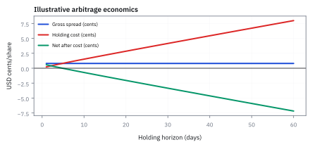
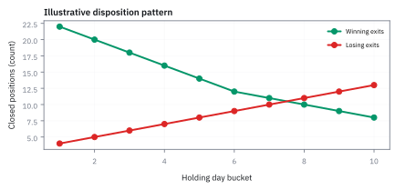
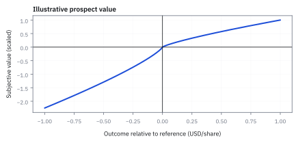
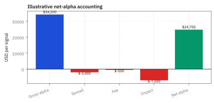

24.1 Market Efficiency, Limits, and Behavioural Roots
ราคาอาจสะท้อนข้อมูลเร็ว แต่ไม่ได้แปลว่าความเสี่ยง ต้นทุน และอคติหายไป
หุ้นคู่หนึ่งซื้อได้ 50.00 และ short ได้ \$50.80 จำนวน 10,000 หุ้น ส่วนต่างบนจอ \$8,000 หลังหักค่าเข้าออก ค่ายืมหุ้น 10 วัน และขาดทุนจากช่องว่างราคา เหลือจริงเท่าไร?
เฉลย: 8,000 − 1,200 − 2,000 − 3,500 = \$1,300 หรือ 1.3% ของทุนที่เสี่ยง ส่วนต่างที่เห็นไม่ใช่กำไร ราคาที่ผิดจึงอยู่ได้นาน เพราะการแก้มันมีต้นทุนและความเสี่ยง
ศัพท์ที่ต้องรู้ก่อนคุยเรื่อง efficiency
- market efficiency
- แนวคิดว่าราคาหลักทรัพย์รวมข้อมูลที่ผู้เล่นเข้าถึงได้เร็วเพียงใด ใช้ตั้งคำถามว่าผลตอบแทนเกินกว่าค่าชดเชยความเสี่ยงและต้นทุนเป็นสิ่งที่ทำซ้ำได้หรือไม่
- efficient market hypothesis (EMH)
- กรอบสมมติฐานที่บอกว่าหลังปรับความเสี่ยงและต้นทุนแล้ว ไม่มีกลยุทธ์ใช้ข้อมูลชุดที่กำหนดเพื่อสร้างผลตอบแทนเกินอย่างสม่ำเสมอ ใช้เป็น null model สำหรับทดสอบสัญญาณ
- arbitrage
- การซื้อและขายสิ่งที่ให้ cash flow เดียวกันเพื่อหวังกำไรแทบไร้ความเสี่ยง ใช้เป็นกลไกที่ผลักราคาที่ผิดให้กลับเข้าใกล้กัน แต่ต้องมีเงินทุนและการดำเนินการจริง
- limits to arbitrage
- ข้อจำกัด เช่น short-sale constraint, funding risk, execution cost และความเสี่ยงที่ mispricing จะอยู่นาน ใช้อธิบายว่าทำไม arbitrageur ไม่สามารถลบความผิดปกติได้ทันที
- behavioural finance
- การศึกษาว่าความเชื่อและการตัดสินใจที่เบี่ยงจาก rational benchmark เปลี่ยนราคาและ trading ได้อย่างไร ใช้เชื่อมจิตวิทยากับข้อมูลตลาด
- prospect theory
- แบบจำลอง utility ที่ให้คนประเมินกำไรและขาดทุนเทียบกับ reference point แบบไม่สมมาตร ใช้อธิบาย loss aversion และการถือสินทรัพย์ขาดทุนไว้นาน
- disposition effect
- แนวโน้มขาย position ที่กำไรเร็วเกินไปแต่ถือ position ที่ขาดทุนไว้นาน ใช้ตรวจว่าพฤติกรรมนี้สร้างแรงขายและแรงซื้อผิดจังหวะหรือไม่
- short
- การยืม share แล้วขายก่อน หวังซื้อคืนถูกกว่าเพื่อคืนเจ้าของ ใช้แสดงความเห็นว่าราคาสูงเกิน แต่มี borrow fee และความเสี่ยงขาดทุนไม่จำกัด
- long
- การถือ share ที่ซื้อไว้เพื่อได้กำไรเมื่อราคาขึ้น ใช้เป็นฝั่งตรงข้ามของ short และเป็น exposure ที่คำนวณ P&L ได้ตรงไปตรงมา
- alpha
- ผลตอบแทนส่วนเกินหลังหัก benchmark risk และต้นทุนตามนิยามของกลยุทธ์ ใช้แยก skill หรือ signal ออกจาก beta ที่ตลาดจ่ายให้ทั่วไป
- survivorship bias
- bias ที่เกิดจากการเก็บเฉพาะหุ้นหรือกองทุนที่ยังอยู่ ทำให้ผลย้อนหลังดูดีเกินจริง ใช้เป็น data control ก่อนสรุปว่า strategy มี alpha
utility ที่ใช้ใน behavioural model
- utility
- function ที่จัดอันดับความพึงพอใจของผลลัพธ์ภายใต้ความเสี่ยง ใช้แปลงกำไร ขาดทุน และ preference ให้เป็น decision rule
สัญลักษณ์และหน่วย
| สัญลักษณ์ | ความหมาย | หน่วย |
|---|---|---|
| $P_t$ | ราคาปิดหรือ mid price ของ share ณ เวลา $t$ | USD/share |
| $R_{t+1}$ | simple return ช่วงถัดไป คือการเปลี่ยนราคาเทียบกับ $P_t$ | fraction per horizon |
| $I_t$ | ข้อมูลที่ตลาดสังเกตได้ ณ เวลา $t$ | information set |
| $V_t$ | มูลค่าพื้นฐานที่มีเงื่อนไขต่อข้อมูล ซึ่งใช้เป็น benchmark ทางเศรษฐศาสตร์ | USD/share |
| $\alpha$ | ผลตอบแทนส่วนเกินที่เหลือหลังหัก factor exposure และต้นทุน | fraction per horizon |
| $c$ | ต้นทุน all-in ต่อ share รวม spread, fee, impact และ borrow ตามกรณี | USD/share |
| $\lambda$ | ค่า coefficient loss aversion ใน utility ของ prospect theory | dimensionless |
ที่มาที่ไป: สมมติฐานที่ทั้งวิชานี้ตั้งอยู่บน
Eugene Fama สรุปแนวคิดนี้ไว้อย่างเป็นระบบในปี 1970 ว่าราคาสะท้อนข้อมูลที่มีอยู่แล้ว จึงไม่มีใครทำกำไรเกินปกติได้อย่างสม่ำเสมอจากข้อมูลนั้น
ถ้าข้อสรุปนั้นจริงร้อยเปอร์เซ็นต์ อาชีพที่หนังสือเล่มนี้เตรียมคนไปทำก็ไม่ควรมีอยู่
แต่ในทศวรรษ 1970 เป็นต้นมา Daniel Kahneman กับ Amos Tversky แสดงว่ามนุษย์ตัดสินใจ ภายใต้ความไม่แน่นอนด้วยรูปแบบที่ผิดพลาดอย่างเป็นระบบ ไม่ใช่ผิดแบบสุ่ม
และงานรุ่นหลังชี้ว่าการแก้ราคาที่ผิดนั้นเองก็มีความเสี่ยงและมีต้นทุน ราคาที่ผิดจึงอยู่ได้นานกว่าที่ทฤษฎีบอก และนานพอที่จะทำให้คนที่เข้าไปแก้เจ๊งก่อน
ทำไม efficiency ไม่ได้แปลว่า price = value ทุกวินาที
ให้แยกคำว่า value ซึ่งเป็นมูลค่าปัจจุบันของ cash flow ที่คาดไว้ ออกจากราคาซึ่งเป็นราคาที่ผู้ซื้อกับผู้ขายยอมแลกกัน ณ ตอนนี้ ตลาดที่ efficient ไม่จำเป็นต้องรู้ value ที่แท้จริงอย่างสมบูรณ์ แต่หมายถึงข้อมูลที่ทุกคนเข้าถึงและ trade ได้ถูกแข่งขันจนโอกาสกำไรที่ปรับด้วยความเสี่ยงและต้นทุนไม่เหลืออย่างง่ายดาย สำหรับ United States (US) equity การทดสอบจึงต้องระบุ universe, timestamp, benchmark, bid/ask, fee และ horizon ให้ชัด ไม่เช่นนั้น backtest จะพิสูจน์เพียงว่าเราเลือกคำจำกัดความได้เก่ง
ขั้นที่ 1 — นิยามผลตอบแทนและข้อมูลที่อนุญาต
ขั้นแรกต้องกำหนด horizon เช่น 5 นาทีหรือ 1 วัน ไม่ควรผสมกัน เพราะ spread และความผันผวนมีหน่วยเวลาไม่เหมือนกัน
$P_t$ และ $P_{t+1}$ คือ USD/share ก่อนและหลัง horizon เดียวกัน ส่วน $R_{t+1}$ เป็น fraction ไม่ใช่ USD; $I_t$ คือข้อมูลที่ใช้ได้ ณ เวลา trade
ส่วน adjusted return หัก benchmark ที่เหมาะกับความเสี่ยงและต้นทุน c ใน horizon เดียวกัน; เงื่อนไขค่าเฉลี่ยศูนย์ใน $H_0$ เป็น null ที่บอกว่า signal จาก $I_t$ ไม่ทำนายผลตอบแทนส่วนเกินหลังปรับความเสี่ยงกับต้นทุนได้
ผลตอบแทนศูนย์หมายถึงส่วนไหน
ตัวอย่างหนึ่งช่วง: strategy ได้ 1.2% ตลาดได้ 1% และ beta เท่ากับ 1.10 ผลตอบแทน 1.1% จึงอธิบายด้วย market exposure เหลือส่วนเกิน 0.1% ก่อนต้นทุน หากต้นทุนช่วงเดียวกัน 0.1% ส่วนเกินสุทธิเป็นศูนย์ทั้งที่ผลตอบแทนรวมเป็นบวก
เมื่อพูดว่าไม่มี alpha ที่หาได้ง่าย เราหมายถึงส่วนเกินเทียบ benchmark ที่ปรับความเสี่ยงและต้นทุนแล้ว ไม่ใช่คาดว่าราคาหุ้นทุกตัวจะให้ผลตอบแทนศูนย์
การทดสอบยังขึ้นกับว่า benchmark ที่เลือกอธิบายความเสี่ยงได้ดีแค่ไหน
ขั้นที่ 2 — แยก expected return, risk premium และ alpha
ถ้า strategy long NVDA ทุกครั้งที่ตลาดขึ้น มันอาจได้ผลตอบแทนดีเพราะ beta สูง ไม่ใช่เพราะมี alpha ดังนั้น control ต้อง regress หรือ neutralize exposure ก่อน
ใส่ผลตอบแทนของ market benchmark $R^M$ และน้ำหนักที่ strategy ขยับตามตลาด $\beta$ เข้าไปก่อน. ส่วนนี้คือผลตอบแทนที่มาจากการถือ market exposure ธรรมดา
จากนั้นเหลือ $\alpha$ ซึ่งเป็นส่วนที่ strategy อ้างว่าทำนายได้ และ $\varepsilon$ ซึ่งคือ shock ที่อธิบายไม่ได้. EMH ไม่ได้บอกว่าผลตอบแทนต้องเป็นศูนย์; มันบอกว่า alpha หลังเทียบ benchmark และต้นทุนไม่ควรเดาได้ง่าย
ข้อจำกัดที่ตัดไม่ออก — ทดสอบ efficiency เดี่ยว ๆ ไม่ได้เลย
ประวัติศาสตร์ยืนยันข้อนี้ซ้ำแล้วซ้ำอีก หุ้นเล็กเคยให้ผลตอบแทนเกินแบบจำลองมาหลายสิบปี ตอนนั้นดูเหมือนหลักฐานว่าตลาดไร้ประสิทธิภาพ จนกระทั่งปี 1993 Fama กับ French เติมขนาดกิจการและมูลค่าเข้าไปเป็นปัจจัยความเสี่ยง แล้ว alpha ก้อนนั้นก็หายไปเกือบหมด สิ่งที่เคยเรียกว่า alpha กลายเป็น beta ของปัจจัยที่เราเพิ่งมองเห็น
บนโต๊ะจริง นี่คือเหตุผลที่ต้องถามเสมอว่ากลยุทธ์ที่ดูมี alpha กำลังได้เงินจากความผิดพลาดของคนอื่น หรือกำลังรับความเสี่ยงบางอย่างที่ยังไม่มีใครตั้งชื่อ สองอย่างนี้หน้าตาเหมือนกันใน backtest แต่ต่างกันสิ้นเชิงตอนวิกฤต
ดูบรรทัดที่สอง ค่าที่วัดได้จริงมีแค่ผลตอบแทนที่เกิดขึ้น ส่วนผลตอบแทนที่ควรจะเป็น ไม่มีใครเห็น มันมาจากแบบจำลองที่เราเลือกใส่เข้าไปเอง
แปลว่าตัวเลข alpha ที่ได้ ไม่ได้วัดความไร้ประสิทธิภาพของตลาดอย่างเดียว มันวัดระยะห่างระหว่างของจริงกับแบบจำลองของเรา ซึ่งมีสองอย่างปนกันอยู่
พอผลออกมาว่า alpha ไม่เป็นศูนย์ จึงสรุปได้แค่ว่ามีอะไรผิด แต่บอกไม่ได้เลยว่าตลาดไร้ประสิทธิภาพ หรือแบบจำลองความเสี่ยงของเราตกอะไรไป
Eugene Fama เรียกข้อนี้ว่า joint hypothesis problem ตั้งแต่ปี 1970 และมันไม่ใช่ปัญหาที่แก้ได้ด้วยข้อมูลที่มากขึ้นหรือสถิติที่ดีขึ้น มันเป็นข้อจำกัดของคำถาม ไม่ใช่ของเครื่องมือ
แล้วเอาไปใช้ทำอะไรได้จริงบ้าง
การเข้าใจว่าตลาดมีประสิทธิภาพแค่ไหน กำหนดว่าควรใช้เวลาไปกับอะไร
ใช้ตั้งความคาดหวังว่าจะหาโอกาสได้ที่ไหน เพราะส่วนที่มีประสิทธิภาพสูงแทบไม่เหลือโอกาส
ใช้อธิบายว่าทำไมกลยุทธ์ที่เผยแพร่แล้วถึงใช้ไม่ได้ผลอีก
ใช้เข้าใจว่าอคติของมนุษย์สร้างรูปแบบที่ทำเงินได้อย่างไร และทำไมมันถึงไม่หายไปทันที
ภาพที่ 24.1a — limits to arbitrage: spread ต้องชนะ holding cost

ภาพนี้เป็น scenario เชิงสอน: แกนตั้งคือกำไรสุทธิต่อ share จากการซื้อของถูกขายของแพง แกนนอนคือวันที่ต้องถือ position; เส้นต่าง ๆ แสดงว่า funding, borrow และ mark-to-market risk ทำให้ mispricing ที่ดูน่าสนใจในวันแรกไม่ใช่ free money
ข้อจำกัดของ arbitrage ทำงานเป็นลำดับ
เริ่มจาก mispricing $d$ USD/share ถ้าอยากทำ arbitrage ต้องเปิด long ฝั่งถูกและ short ฝั่งแพงพร้อมกัน ขั้นต่อมาคือจ่าย spread และ fee ตอนเข้าออก ต้องหา share ให้ short และวาง collateral หากราคา diverge ต่อจะเกิด margin call ก่อนที่ thesis จะถูกต้อง สุดท้ายต้องมี horizon ที่ยาวพอให้ราคากลับ วิธีคิดนี้บอกว่า arbitrage เป็นกลยุทธ์ที่มี capital-at-risk ไม่ใช่การพิมพ์เงิน
ขั้นที่ 3 — นิยามของบัญชีกำไรสุทธิ ของรายการที่ดูเหมือนได้เงินฟรี
บรรทัดนี้เป็น นิยาม ของบัญชี ไม่ใช่ผลที่พิสูจน์ ในวงเล็บคือส่วนต่างที่เห็นตอนแรก ลบด้วยต้นทุนทุกอย่างที่ต้องจ่ายจริง คือค่าเข้าและค่าออก กับค่ายืมหุ้นและค่าเงินทุนที่คิดตามระยะเวลาที่ต้องถือ ก้อนสุดท้ายนอกวงเล็บคือขาดทุนจากช่องว่างที่อาจเกิด ซึ่งเป็นความเสี่ยงที่แท้จริง ใจความคือ: ส่วนต่างที่เห็นบนจอไม่ใช่กำไร มันคือรายได้ก่อนหักต้นทุน และรายการที่ดูเหมือนได้เงินฟรีส่วนใหญ่ หายไปหมดในวงเล็บนี้
ใส่ส่วนต่างราคาต่อ share $d$ แล้วหักต้นทุนตอนเข้า ตอนออก ค่า borrow และ funding ตลอด $T$ วัน. สิ่งที่เหลือในวงเล็บยังเป็น USD ต่อ share
คูณด้วยจำนวน shares $Q$ เพื่อเปลี่ยนเป็น USD ทั้ง trade แล้วหัก $L_{gap}$ สำหรับกรณีราคาวิ่งผิดทางก่อนกลับ คำตอบคือกำไรของ scenario นี้ ไม่ใช่คำรับประกันว่าราคาจะกลับมา
คำตอบ — pair trade ที่ส่วนต่างบนจอไม่ใช่กำไร
คำถาม: ซื้อหุ้นได้ 50.00 short ได้ \$50.80 จำนวน 10,000 หุ้น ค่าเข้าออกรวม \$0.12 ต่อหุ้น ค่ายืมหุ้นและเงินทุน \$0.020 ต่อหุ้นต่อวัน นาน 10 วัน และขาดทุนจากช่องว่างราคา \$3,500 เหลือจริงเท่าไร?
ของที่มี: ขั้นที่ 3
1 ส่วนต่างบนจอ 10,000 × 0.80 = \$8,000
2 ค่าเข้าออก 10,000 × 0.12 = \$1,200 และค่าถือ 10,000 × 0.020 × 10 = \$2,000
3 เหลือ 8,000 − 1,200 − 2,000 − 3,500 = \$1,300 หรือ 1.30% ของทุนที่เสี่ยง \$100,000
ตรวจเองใน 10 วินาที: 8,000 − 1,200 − 2,000 − 3,500 = 1,300
แปลว่าอะไร: ก่อนเปิดสถานะต้องตรวจว่ายืมหุ้นได้ และตั้งจุดตัดขาดทุนไว้ก่อน เพราะส่วนต่างที่เห็นบนจอคือรายได้ก่อนหักต้นทุน ถ้าราคาถ่างออกต่อ margin call มาก่อนที่ความคิดจะถูก
ภาพที่ 24.1b — disposition effect ใน trade ledger จำลอง

ข้อมูลจำลองนี้แสดงสัดส่วนการปิดกำไรและการปิดขาดทุนในแต่ละวันเพื่อสอนรูปแบบ ไม่ใช่ข้ออ้างว่า dataset ใดมี bias; ถ้าปิดกำไรเร็วสูงกว่าปิดขาดทุนซ้ำ ๆ ต้องตรวจ holding-time distribution และ selection effect
จาก rational benchmark ไปสู่ prospect theory
สมมติว่า trader ไม่ได้ให้ utility กับผลตอบแทน absolute แต่เทียบกับ reference point เช่นราคาเข้าหรือ target ที่ตั้งไว้ Prospect theory ใช้ value function ที่ชันฝั่งขาดทุนกว่า และทำให้ loss เล็ก ๆ เจ็บกว่ากำไรขนาดเท่ากัน ความหมายเชิง implementation คืออย่าดูแค่ average P&L: ต้องวัด exit hazard แยก winning และ losing positions, unrealized loss age, และการเพิ่มขนาดเพื่อแก้มือ
ถือ loser จากความโค้ง ไม่ใช่แค่ความเจ็บ
คิด payoff เทียบ reference point เดียวกันและใช้โอกาสครึ่งต่อครึ่งโดยยังไม่บิดน้ำหนัก ขาดทุนแน่ 100 ให้ value ลบยี่สิบ แต่เสี่ยงไม่เสียเลยหรือเสีย 200 ให้ค่าเฉลี่ยลบ 14.14 คนใน model นี้จึงยอมเสี่ยงต่อในแดนขาดทุน
ฝั่งกำไรกลับกัน ได้ 100 แน่มีค่า 10 มากกว่าการเสี่ยงศูนย์หรือ 200 ที่ค่าเฉลี่ย 7.07 จึงชอบปิดกำไร ความโค้งจาก eta ต่ำกว่าหนึ่งทำให้สองฝั่งชอบความเสี่ยงต่างกัน การตั้ง eta หนึ่งกับ lambda สองเพียงอย่างเดียวบอก loss aversion แต่ยังไม่พิสูจน์ disposition effect
ขั้นที่ 4 — value function แบบ loss aversion
ถ้า $\eta=1$ และ $\lambda=2$ กำไร $+0.10$ USD/share ให้ค่า $0.10$ แต่ขาดทุน $-0.10$ ให้ค่า $-0.20$ จึงแสดง loss aversion ส่วนพฤติกรรมถือ loser และรีบขาย winner ต้องดูความโค้งและ reference point เพิ่ม
$x$ คือกำไรหรือขาดทุน USD/share เทียบกับ reference point, $0\lt\eta\le1$ ทำให้ความไวต่อผลลัพธ์ลดลงเมื่อขนาดใหญ่ขึ้น และ $\lambda$ dimensionless มากกว่า 1 ทำให้ loss มีน้ำหนักมากกว่า gain; สมการนี้เป็น behavioral model ไม่ใช่กฎราคาที่ทุกคนต้องทำตาม
ภาพที่ 24.1c — prospect value ไม่สมมาตรรอบ reference point

เส้นนี้ใช้ $\eta=0.8$ และ $\lambda=2.25$ เป็น parameter scenario; ความชันฝั่ง loss ที่แรงกว่าคือ intuition ของ loss aversion ไม่ใช่ calibration สากลสำหรับ trader ทุกคน
ทำเป็น quant control ได้อย่างไร
ขั้นที่หนึ่งเก็บ order และ position event แบบ point-in-time เพื่อไม่ให้ใช้ข้อมูลหลังปิด trade ขั้นที่สองคำนวณ net alpha หลังหัก bid/ask, slippage, fee, borrow และ market impact ขั้นที่สามทำ placebo และ walk-forward split เพื่อดูว่าสัญญาณยังอยู่เมื่อเปลี่ยนช่วงเวลา ขั้นที่สี่รายงาน confidence interval, turnover, capacity และ drawdown แยกจากผลตอบแทนเฉลี่ย ขั้นที่ห้าตั้ง kill switch เมื่อ borrow หาย, spread กว้างเกิน threshold หรือ realized loss ต่อวันเกิน limit
ขั้นที่ 5 — นิยามของ alpha สุทธิที่ต้องรายงาน
สองก้อนนี้เป็น นิยาม ของบัญชี ไม่ใช่ผลที่พิสูจน์ บรรทัดแรกหักสองอย่างออกจากผลตอบแทนที่ทำได้: ส่วนที่มาจากการเกาะตลาด ตามหัวข้อ 15.2 และต้นทุนซื้อขายทั้งหมดหารด้วยขนาดเงิน เพื่อให้เป็นหน่วยเดียวกัน บรรทัดที่สองกางต้นทุนออกเป็นสี่ก้อนที่ต้องนับให้ครบ จุดสำคัญคือต้องหักทั้งสองอย่าง การหักแค่ต้นทุนแต่ไม่หักส่วนที่มาจากตลาด คือวิธีที่ทำให้กลยุทธ์ที่แค่ซื้อตลาดแล้วใช้เงินกู้ ดูเหมือนมีฝีมือ
ใส่ average return ของ strategy แล้วลบ market return ที่คูณ $\hat{\beta}$ ส่วนที่เหลือคือ alpha ก่อนหักต้นทุน
รวมต้นทุนต่อ share ทุกก้อน คูณจำนวน shares แล้วหารด้วย capital at risk เพื่อเปลี่ยนต้นทุนเป็น return fraction หน่วยเดียวกัน. ถ้าข้ามขั้นนี้ backtest จะดูหล่อกว่าเงินจริง
ขั้นที่ 6 — ปริศนาสามบานประตู: ทำไมเปลี่ยนแล้วชนะสองในสาม
มีสามประตู เงินรางวัลอยู่หลังประตูเดียว คุณเลือกหนึ่งบาน แล้วพิธีกรเปิดอีกบานหนึ่ง ซึ่งมีแพะอยู่ข้างหลังเสมอ จากนั้นถามว่าจะเปลี่ยนใจหรือไม่
คำตอบที่คนส่วนใหญ่ตอบคือห้าสิบห้าสิบ เพราะเหลือสองบานเท่ากัน คำตอบนั้นผิด และเหตุผลที่ผิดคือสิ่งที่หัวข้อนี้ต้องการให้เห็น
แยกเป็นสองกรณีที่ครอบคลุมทั้งหมด กรณีแรกคือเลือกถูกตั้งแต่แรก มีโอกาสหนึ่งในสาม กรณีนี้เปลี่ยนใจแล้วแพ้ เพราะรางวัลอยู่ที่เดิม
กรณีที่สองคือเลือกผิดตั้งแต่แรก มีโอกาสสองในสาม กรณีนี้รางวัลอยู่ในสองบานที่เหลือ และพิธีกรต้องเปิดบานที่เป็นแพะตามข้อบังคับ บานที่เหลือจึงเป็นรางวัลเสมอ เปลี่ยนใจแล้วชนะ
ดังนั้นการเปลี่ยนใจชนะพอดีเมื่อการเลือกครั้งแรกผิด นั่นคือสองในสาม ไม่ใช่ครึ่งต่อครึ่ง เหตุผลไม่ได้อยู่ที่จำนวนบานที่เหลือ แต่อยู่ที่การเปิดบานนั้นถูกบังคับ
เจตนาของตัวอย่างนี้กับหัวข้อนี้: ตัวเลขที่เห็นไม่ใช่ข้อมูลด้วยตัวเอง ข้อมูลคือตัวเลขบวกกับกระบวนการที่ทำให้มันโผล่มา การไม่ถามว่ากระบวนการถูกบังคับอย่างไร คือรากของความผิดพลาดแบบเดียวกันในตลาด
ขั้นที่ 7 — ตัวอย่างค้าน: ถ้าคนเปิดบานไม่ถูกบังคับ จะเหลือครึ่งต่อครึ่ง
เพื่อพิสูจน์ว่าข้อบังคับคือตัวที่มีค่า ไม่ใช่ตัวเลข ลองเปลี่ยนกระบวนการอย่างเดียว โดยให้คนเปิดบานไม่รู้ว่ารางวัลอยู่ที่ไหน แล้วเปิดบานหนึ่งอย่างสุ่ม
ถ้าบานที่เปิดโชว์แพะโดยบังเอิญ คราวนี้เปลี่ยนใจหรือไม่เปลี่ยนก็ได้ผลเท่ากัน เพราะการเปิดบานไม่ได้บอกอะไรเพิ่มเลย
กรณีใหม่: คนเปิดบานไม่ได้รู้ตำแหน่งรางวัล จึงไม่มีข้อบังคับให้เลี่ยงบานที่มีรางวัล ผลคือบางครั้งเขาก็เปิดเจอรางวัลเอง ซึ่งทำให้เกมจบไปเลย
ถ้าสนใจเฉพาะครั้งที่เขาเปิดเจอแพะโดยบังเอิญ จำนวนครั้งที่เหลือคือสองในสามของทั้งหมด และในกลุ่มนั้นการเปลี่ยนใจชนะครึ่งหนึ่งพอดี
ตัวเลขจากการจำลองสี่แสนครั้งยืนยันทั้งสองกรณี: แบบมีข้อบังคับได้หนึ่งในสามกับสองในสาม แบบไม่มีข้อบังคับได้ครึ่งต่อครึ่ง
อ่านคู่กันแล้วเห็นชัดว่า สิ่งที่เปลี่ยนคือข้อบังคับของคนเปิดบาน ไม่ใช่จำนวนบานที่เหลือ และนี่คือความต่างระหว่างข้อมูลกับตัวเลข
implementation check — decision log ก่อนปล่อยสัญญาณ
สำหรับ signal หุ้น Apple (ticker AAPL) ให้ซื้อ 100,000 shares ที่ arrival mid 190.00 USD/share; gross alpha 18 bp บน notional \$19,000,000 เท่ากับ \$34,200. Spread, fee และ impact รวม 0.095 USD/share หรือ \$9,500 จึงเหลือ expected net \$24,700 ก่อนความเสี่ยงถ้า fill เฉลี่ย 190.12 USD/share ต้นทุน execution เท่ากับ \$12,000 และต้องหยุดเพิ่มขนาดเมื่อ realized shortfall เกิน 0.10 USD/share พร้อมส่ง order log ให้ transaction-cost analysis (TCA)
ตัวอย่างที่สอง — คำตอบและวิธีเช็ก
คำตอบ: เปลี่ยนใจดีกว่า เพราะชนะสองในสาม ขณะที่อยู่เฉยชนะเพียงหนึ่งในสาม และถ้าคนเปิดบานไม่ถูกบังคับให้เลี่ยงรางวัล ทั้งสองทางจะได้ครึ่งต่อครึ่ง หัวข้อ 15.6 ใช้เหตุผลเดียวกันกับกองทุนที่ถูกเลือกมาเสนอขายเพราะผลออกมาดี
ตรวจเองใน 10 วินาที: ถามว่ากรณีที่เลือกผิดตั้งแต่แรกเกิดบ่อยแค่ไหน คำตอบคือสองในสาม และนั่นคือโอกาสชนะของการเปลี่ยนใจ
ใช้ตัดสินใจ: เวลาเห็นผลลัพธ์ที่ดี ให้ถามว่ามันผ่านกระบวนการที่ถูกบังคับให้ดูดีหรือไม่ ก่อนจะถือว่าเป็นข้อมูล เพราะตัวเลขเดียวกันมาจากกระบวนการต่างกันได้คนละความหมาย
โค้ดตรวจ pair trade, alpha หลังต้นทุน, prospect theory, Monty Hall และ TCA
import numpy as np
Q = 10_000
gross = Q * (50.80 - 50.00)
net = gross - Q * 0.12 - Q * 0.020 * 10 - 3_500
assert abs(gross - 8_000) < 1e-6 and abs(net - 1_300) < 1e-6 and abs(net / 100_000 - 0.013) < 1e-9
excess = 0.012 - 1.10 * 0.010 # beta-adjusted, then cost
assert abs(excess - 0.001) < 1e-12 and abs(excess - 0.001) < 1e-12 # net 0 after a 0.1% cost
v = lambda x, eta=0.5, lam=2.0: x**eta if x >= 0 else -lam * (-x)**eta
assert v(-100) == -20 and abs(0.5 * v(0) + 0.5 * v(-200) + 14.1421) < 1e-4
assert v(100) == 10 and abs(0.5 * v(0) + 0.5 * v(200) - 7.0711) < 1e-4
rng = np.random.default_rng(0) # Monty Hall, host must show a goat
prize = rng.integers(0, 3, 400_000)
assert abs(np.mean(prize == 0) - 1 / 3) < 0.005 and abs(np.mean(prize != 0) - 2 / 3) < 0.005
host = rng.integers(1, 3, 400_000) # host opens door 1 or 2 at random
shown_goat = prize != host
stay_win = (prize == 0)[shown_goat].mean()
assert abs(shown_goat.mean() - 2 / 3) < 0.005 and abs(stay_win - 0.5) < 0.005
gross_alpha = 0.0018 * 100_000 * 190.00 # implementation check
costs = 0.095 * 100_000
assert abs(gross_alpha - 34_200) < 1e-6 and abs(gross_alpha - costs - 24_700) < 1e-6
assert abs((190.12 - 190.00) * 100_000 - 12_000) < 1e-6โค้ดตรวจบัญชี pair trade \$1,300 ผลตอบแทนส่วนเกินหลัง beta ค่า value ของ prospect theory ทั้งฝั่งขาดทุนและกำไร Monty Hall ทั้งแบบพิธีกรถูกบังคับและแบบเปิดสุ่ม และ waterfall ของ alpha \$34,200 ที่เหลือ \$24,700
กับดัก: EMH ไม่ใช่คำสั่งให้หยุดทำ quant
EMH เป็น benchmark ที่ช่วยกำหนด null และมาตรฐานหลักฐาน ไม่ใช่คำทำนายว่าราคาจะไม่ผิดเลย ตลาดอาจมี efficiency ต่างกันตามข้อมูล, horizon, liquidity, short-sale rule และผู้เล่น การปฏิเสธ null จากค่าเฉลี่ยสูงเพียงช่วงเดียวอาจเกิดจาก multiple testing, look-ahead bias หรือ survivorship bias; ในทางกลับกัน การไม่พบ alpha ก็อาจเกิดจากต้นทุนสูงหรือ sample สั้น ให้รายงานทั้ง gross, net, risk-adjusted, capacity และช่วงความไม่แน่นอน
ข้อจำกัด: วิธีนี้สมมติอะไร และของจริงเป็นอย่างไร
| เรื่อง | วิธีนี้สมมติว่า | ของจริงเป็นอย่างไร | ผลที่ตามมาเวลาใช้งาน |
|---|---|---|---|
| การทดสอบ | ทดสอบได้ว่าตลาดมีประสิทธิภาพหรือไม่ | ต้องทดสอบคู่กับแบบจำลองผลตอบแทนเสมอ | เมื่อพบความผิดปกติ แยกไม่ได้ว่าตลาดไม่มีประสิทธิภาพหรือแบบจำลองเราผิด |
| อคติที่พบ | อคติที่พบในห้องทดลองเกิดในตลาดจริง | ตลาดมีคนที่หากินกับอคติเหล่านั้นอยู่ | รูปแบบที่ควรจะมีตามทฤษฎีพฤติกรรม อาจถูกลบไปแล้วในตลาดที่มีสภาพคล่องสูง |
| ข้อจำกัดของ arbitrage | คนจะเข้ามาแก้ราคาที่ผิด | การแก้ราคาที่ผิดมีความเสี่ยงและมีต้นทุน | ราคาที่ผิดอยู่ได้นานกว่าที่ทฤษฎีบอก และนานพอจะทำให้คนที่เข้าไปแก้เจ๊งก่อน |
แถวล่างเป็นบทเรียนสำคัญที่สุด ราคาที่ผิดอาจผิดต่อไปได้นานกว่าที่เงินของเราจะอยู่รอด
ภาพที่ 24.1d — gross alpha ถูกหักต้นทุนทีละชั้น

waterfall นี้เป็นตัวเลขเดียวกับ implementation check: gross alpha \$34,200 ถูกหัก spread, fee และ impact รวม \$9,500 เหลือ net \$24,700; ใช้เป็น template สำหรับ production transaction-cost analysis (TCA) และตรวจหน่วยเป็น USD ทั้งหมด
สรุปที่ใช้ได้จริง
- market efficiency เป็น null model เรื่อง predictability หลังปรับความเสี่ยงและต้นทุนไม่ใช่คำกล่าวว่าราคาเท่ากับ value ทุก tick
- arbitrage ต้องจ่าย spread, funding, borrow และรับ gap risk; gross discrepancy จึงไม่ใช่กำไรสุทธิ
- prospect theory และ disposition effect แปลงเป็น control ได้ด้วย holding-time, exit hazard, unrealized-loss age และ position limit
- alpha ที่น่าเชื่อถือควร survive point-in-time data, walk-forward test, all-in TCA, capacity และ stress scenario
- สะพานถัดไปคือ bubble และ crisis: ข้อจำกัดระดับ trade สามารถกลายเป็น leverage-liquidity spiral ระดับระบบได้
- ทดสอบ market efficiency เดี่ยว ๆ ไม่ได้ เพราะผลตอบแทนที่ควรจะเป็นมาจากแบบจำลองที่เราเลือกเอง การปฏิเสธสมมติฐานจึงแปลได้ทั้งว่าตลาดไร้ประสิทธิภาพ หรือแบบจำลองผิด และข้อมูลแยกสองอย่างนี้ไม่ออก
- ปริศนาสามบานประตู: เปลี่ยนใจชนะสองในสาม เพราะชนะพอดีเมื่อการเลือกครั้งแรกผิด ไม่ใช่ครึ่งต่อครึ่งอย่างที่สัญชาตญาณบอก
- สิ่งที่ทำให้ตัวเลขมีค่าคือข้อบังคับของคนเปิดบาน ถ้าเปิดแบบสุ่มก็เหลือครึ่งต่อครึ่ง จึงต้องถามทุกครั้งว่าตัวเลขนั้นผ่านกระบวนการอะไรมาจึงโผล่มาให้เห็น